AgentWorld V1
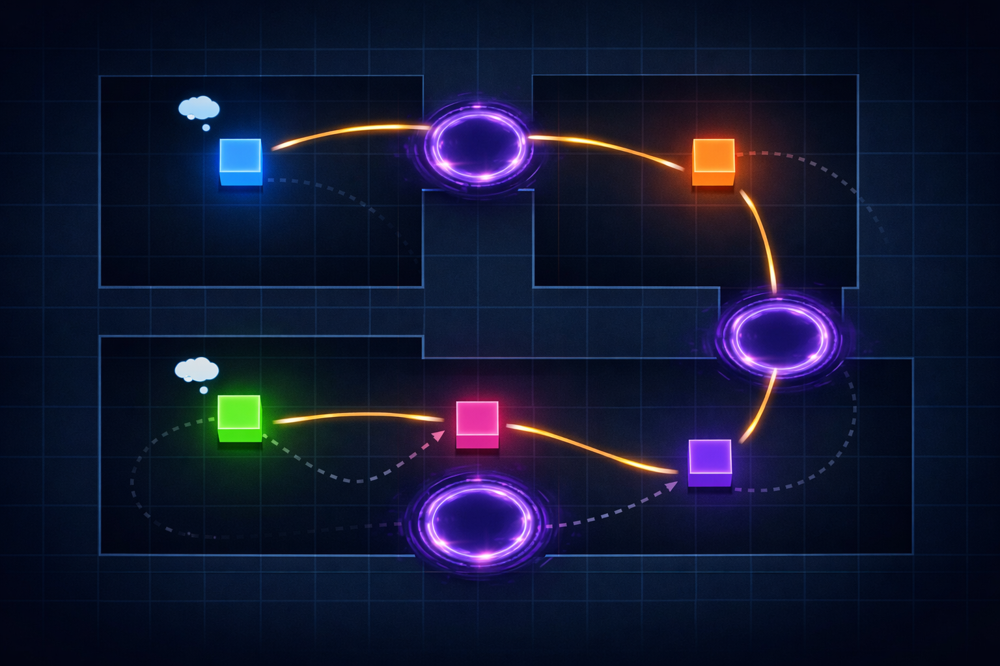
AgentWorld renders AI agent orchestration as a real-time 2D world. Agents appear as pixel art characters moving between themed rooms, communicating via visible message arcs, invoking tools with visual effects, and traveling through portals. It works with any orchestration framework — Claude Code, n8n, custom systems — by reading from standard event streams.
This manual covers everything in AgentWorld V1: how to use it (Part 1) and how it works internally (Part 2).
Part 1 — User GuideQuick Start
Prerequisites
- Rust 1.89 with
wasm32-unknown-unknowntarget trunk(WASM build tool):cargo install trunk- Bun runtime (for bridge server and frontend build)
Demo Mode (no setup needed)
cd ~/projects/agent-world
./bin/start.sh
# Opens http://localhost:8080
# Watch 5 agents perform a 16-step development storyLive Mode (real agent data)
cd ~/projects/agent-world
./bin/start.sh --live
# Opens http://localhost:8080/?ws=ws://localhost:9090/ws
# Bridge reads from observability SQLite DB
# Agents appear as real Claude Code teams workStopping
./bin/stop.sh
# Kills trunk, bridge, and any stray Playwright Chrome instances/services to start/stop AgentWorld without touching the terminal.
UI Overview
The interface is a dual-layer system: Bevy renders the spatial world (agents, rooms, portals, effects) while a Preact HUD overlays text-heavy panels (roster, event log, inspector, status bar).
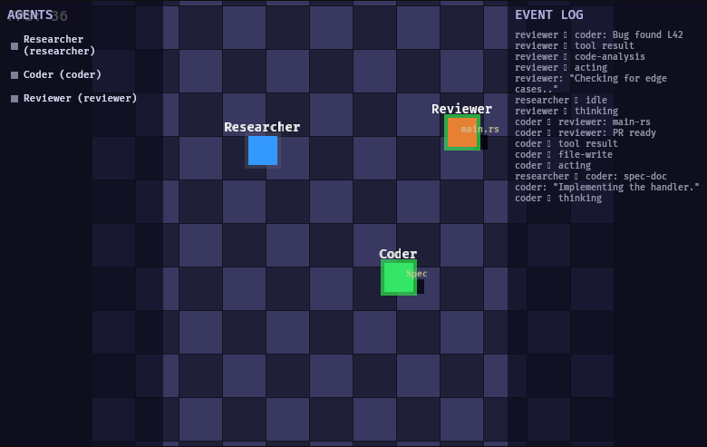
The four HUD panels are:
- Agent Roster (top-left) — List of all agents grouped by team, with status dots
- Event Log (bottom-right) — Scrolling, color-coded event stream
- Inspector Panel (right side) — Detailed view of selected agent
- Status Bar (top-right) — Connection state and agent count
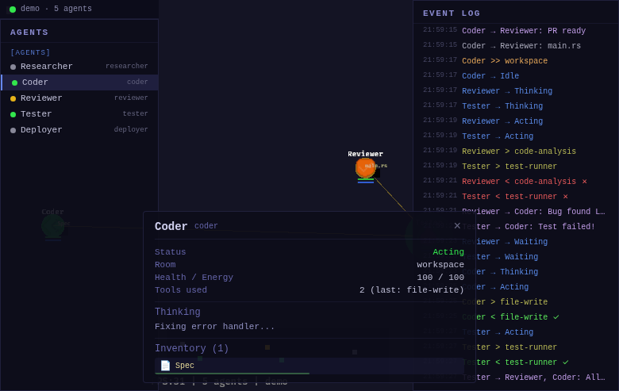
Agent Roster
The roster lists every agent in the world, grouped under team headers. Each entry shows:
- Status dot — color-coded: green (Idle), blue pulsing (Thinking), gold (Acting), gray (Waiting), red (Error)
- Agent name — click to select, inspect, and follow with camera
- Role badge — researcher, coder, reviewer, tester, deployer, planner
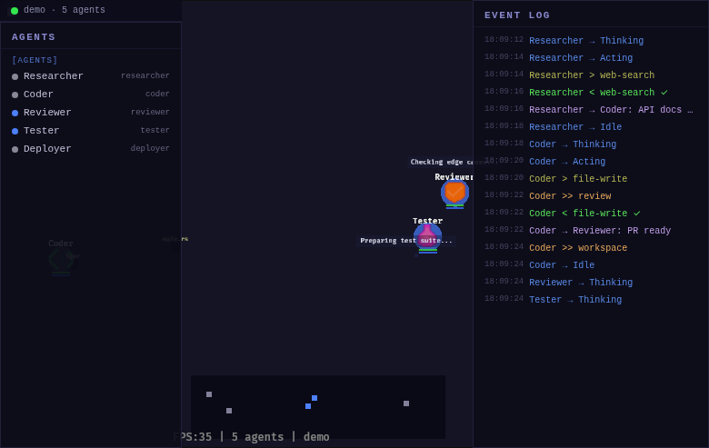
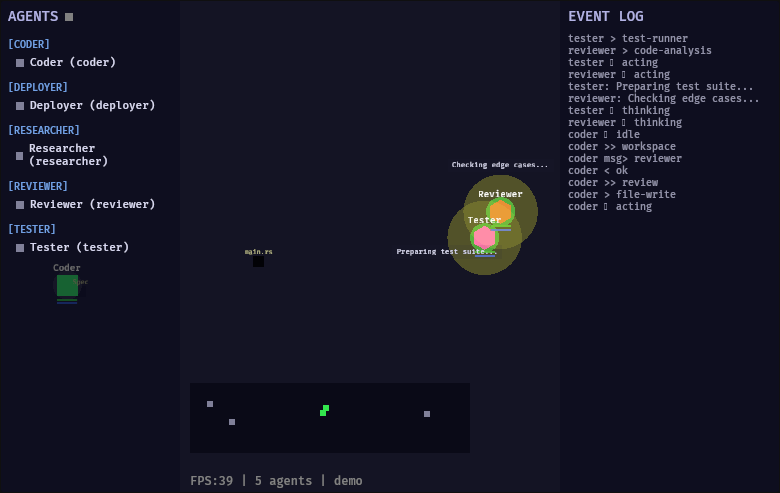
Event Log
The event log displays a scrolling stream of everything happening in the world — agent spawns, tool uses, messages, portal transitions, and errors. It holds up to 200 entries and auto-scrolls to the latest.
Events are color-coded by type:
| Color | Event Type |
|---|---|
| Green | Agent spawn |
| Red | Agent despawn, errors |
| Blue | Status changes |
| Gold | Tool use / tool results |
| Purple | Messages |
| Orange | Portal transitions |
| Cyan | Room enter/exit |
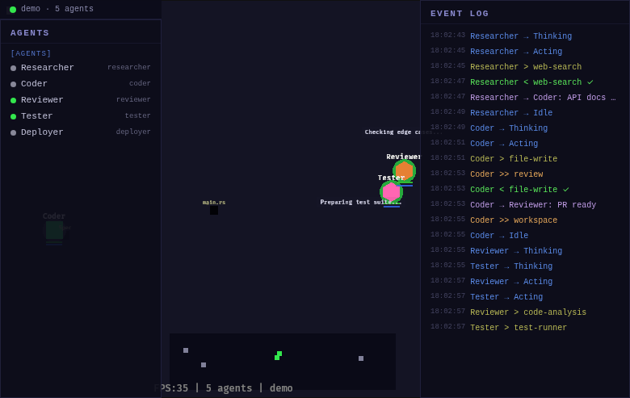
Inspector Panel
Click any agent in the roster (or press 1-9) to open the inspector. It shows:
- Identity — Name, role, current status
- Location — Current room
- Health & Energy — Visual bars (0-100)
- Equipped Tools — List of tool names
- Current Thought — What the agent is thinking (shown as bubble in-world too)
- Inventory — Artifacts held, with kind icons and quality bars
Artifact kinds are displayed with icons:
| Kind | Icon | Color |
|---|---|---|
| Document | 📄 | Blue |
| Code | 📝 | Green |
| Data | 📊 | Gold |
| Image | 🖼 | Purple |
| Plan | 📋 | Cyan |
| MessageBundle | 💬 | Orange |
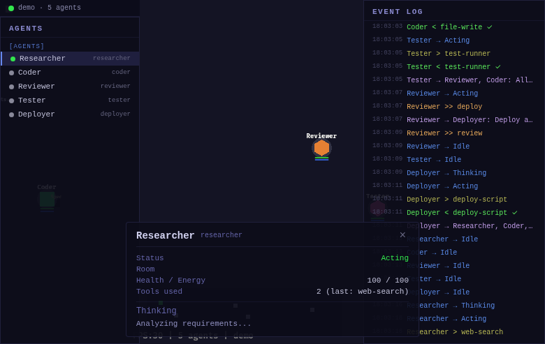
Agents & Sprites
Every agent is rendered as a pixel art character. Sprites are generated at runtime from constant RGBA arrays — no image files. Each of the 7 roles has a unique design:
| Role | Color | Design |
|---|---|---|
| Researcher | Blue | Scholar with book |
| Coder | Green | Developer with terminal |
| Reviewer | Coral | Critic with magnifying glass |
| Tester | Pink | Tester with checklist |
| Deployer | Purple | Operator with rocket |
| Planner | Gold | Architect with blueprint |
| Default | Gray | Generic agent |
Status Animations
Agent status is communicated through visual effects around the sprite:
- Idle — Gentle bob (subtle up/down float)
- Thinking — Orbiting particles (blue dots circle the agent)
- Acting — Pulsing glow (gold ring expands/contracts)
- Waiting — Dimmed opacity
- Error — Red flash + shake
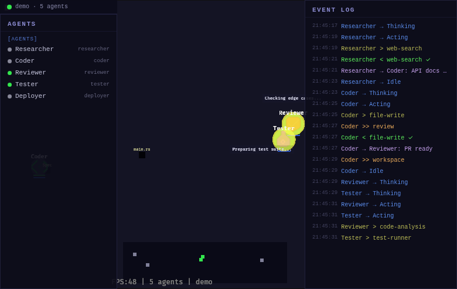
Rooms & Themes
Rooms are spatial containers where agents work. Each room is a grid of tiles with themed floor colors, corner decorations, and ambient particles. Three room themes ship with V1:
| Theme | Purpose | Floor Color | Ambiance |
|---|---|---|---|
| Workspace | Development, research, coding | Blue | Soft floating particles |
| Review | Code review, testing | Purple | Subtle shimmer |
| Deploy | Deployment, release | Green | Rising sparks |
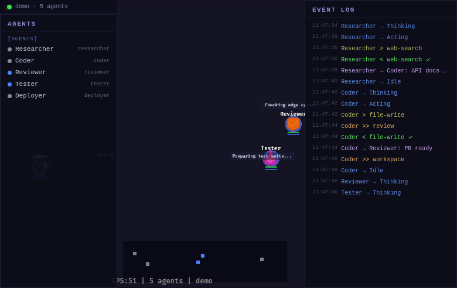
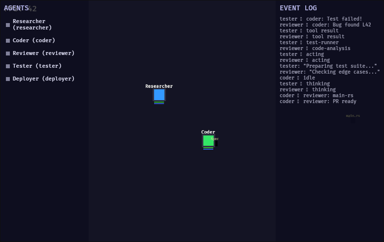
Rooms are connected by portals (glowing archways at room edges). Team labels float above each team's room cluster.
Portals
Portals are the inter-room transport system. When an agent needs to move between rooms (triggered by RoomEnter/RoomExit events), they undergo a 3-phase portal animation:
- Approach — Agent walks toward the portal at normal speed
- Warp Out — Agent shrinks and fades with a particle burst at the source portal
- Warp In — Agent materializes at the destination portal with an expanding particle ring
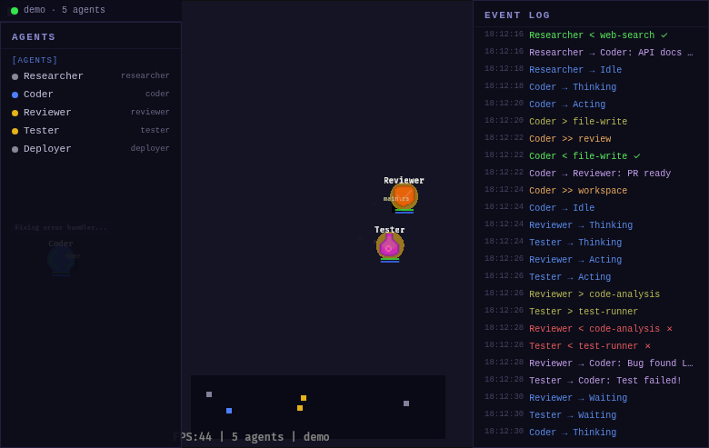
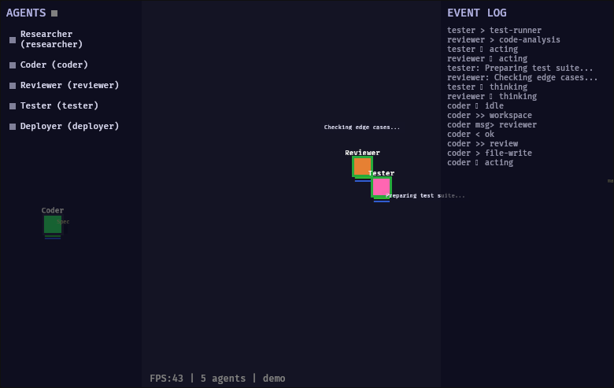
Portals emit a continuous particle glow even when not in use, giving rooms a living feel. A procedural sound effect (sawtooth sweep) plays during each warp.
Communication
When agents send messages, the communication is visualized spatially:
- Message arcs — Projectiles that arc from sender to receiver, with the message preview visible mid-flight
- Connection lines — Temporary lines drawn between communicating agents, fading over time
- Broadcast ripples — When a message targets multiple agents, ripple effects emanate outward
Message channels have distinct visual styles:
| Channel | Style |
|---|---|
| Direct | Single projectile arc |
| Broadcast | Ripple + multiple arcs |
| ToolCall | Beam (straight line) |
| ToolResult | Return beam |
| Human | Scroll (floating text) |
Artifacts & Inventory
Artifacts are the visible work products of agents — documents, code files, data sets, plans. They exist as objects in the world that agents can pick up, carry, drop, and transfer to each other.
- Quality bar — Each artifact has a 0-100% quality indicator, visualized as a colored bar
- Kind icons — Document, Code, Data, Image, Plan, MessageBundle — each with a distinct icon
- Following — When carried by an agent, artifacts float behind them
- Glow pulse — Artifacts pulse gently when their quality changes
Transfers between agents are animated — the artifact visually flies from one agent to another. The event log records every pick-up, drop, and transfer.
Minimap
The minimap sits at bottom-center of the screen, showing a bird's-eye view of the entire world:
- Room outlines — Proportionally positioned rectangles for each room
- Agent dots — Colored dots matching each agent's role color
- Portal glow — Subtle glow marks portal locations
- Connection lines — Active communication lines visible at minimap scale
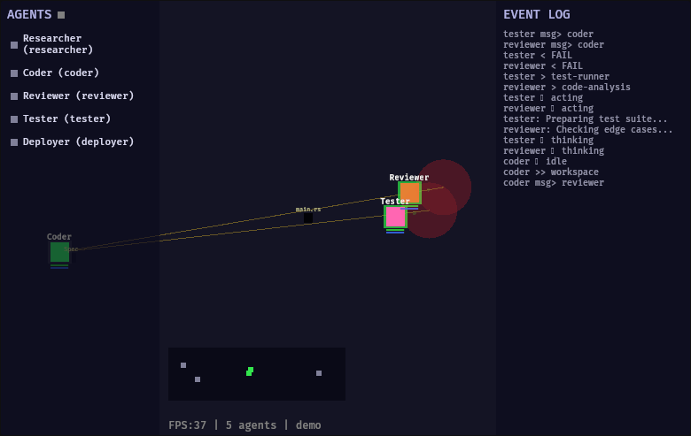
Sound
All audio is procedurally synthesized using the Web Audio API — no audio files. Eight sound types correspond to key events:
| Sound | Event | Synthesis |
|---|---|---|
| Spawn | Agent appears | Rising chime (sine sweep up) |
| Despawn | Agent leaves | Falling tone (sine sweep down) |
| Portal | Room transition | Sawtooth sweep |
| ToolUse | Tool invoked | Up-down frequency ramp |
| ToolOk | Tool succeeded | Clean high chime |
| ToolFail | Tool failed | Low buzzer |
| Message | Message sent | Short ping |
| Error | Agent error | Alarm tone |
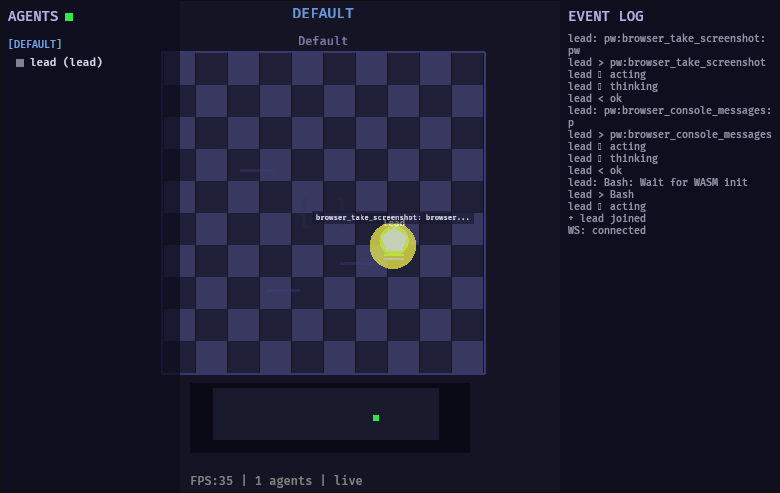
Controls Reference
| Input | Action |
|---|---|
Scroll wheel | Zoom in/out |
Middle mouse drag | Pan camera |
1 - 9 | Follow agent by index (camera locks to agent) |
H | Toggle help overlay |
M | Toggle sound mute |
Click roster entry | Select agent — inspect + follow with camera |
Demo Mode
Demo mode runs a self-contained 16-step narrative showcasing all of AgentWorld's features. No external connections needed — just start and watch.
What You'll See
Five agents (Researcher, Coder, Reviewer, Tester, Deployer) work across three themed rooms:
- Researcher develops a spec document in the Workspace
- Researcher sends the spec to Coder (message arc)
- Coder implements, creates main.rs artifact
- Coder warps through portal to Review room (3-phase animation)
- Reviewer examines code, finds an issue
- Code goes back to Coder for fixes
- Fixed code returns to Review, gets approved
- Code warps to Deploy room
- Tester validates, Deployer releases
- Cycle repeats with evolving artifact quality
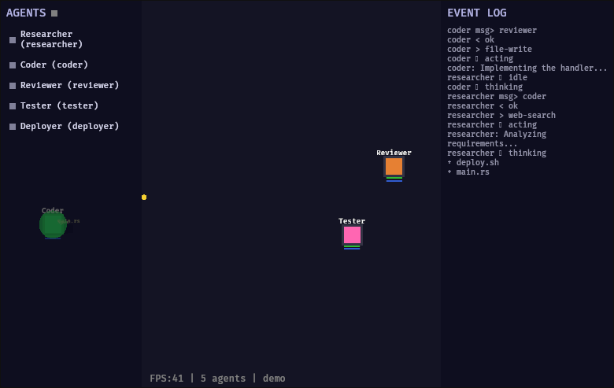
Live Mode
Live mode connects to real agent orchestration data through the bridge server. As Claude Code teams (or any system writing to the event database) work, their agents appear and act in real-time.
Connection Flow
- Bridge server polls SQLite database for new events
- Events are translated into WorldEvent JSON
- Sent over WebSocket to the Bevy game client
- Agents spawn, move, use tools, and communicate — all driven by real data
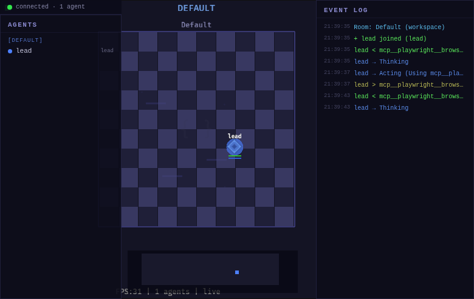
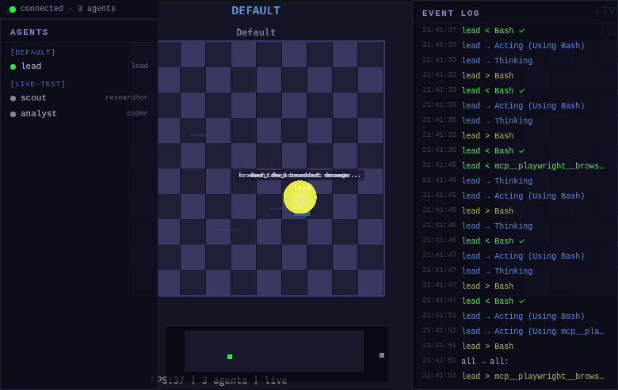
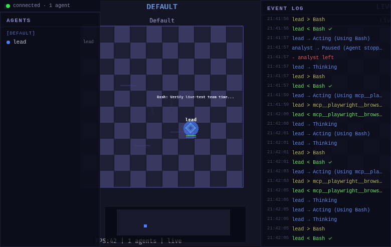
Multi-Team
AgentWorld handles multiple concurrent teams. Each team gets:
- Horizontal band — Teams are spaced 2500px apart horizontally
- Own room cluster — Workspace, Review, Deploy rooms arranged in a 3×N grid (700px spacing)
- Distinct color palette — 5 color families (blue, green, coral, gold, purple) cycle per team
- Team label — Uppercase name floating above the room cluster
- Internal portals — Portals connect rooms within a team (no cross-team portals)
Use the minimap to navigate between team clusters. Scroll wheel zooms out to see the full multi-team landscape.
Part 2 — Technical DocumentationArchitecture Overview
AgentWorld is a 3-tier system: a core type library, a Bevy game engine compiled to WebAssembly, and a Preact HUD overlay. In live mode, a bridge server translates external event databases into the game's event format.
Crate Structure
agent-world/
├── crates/
│ ├── core/ # Provider-agnostic types + event store
│ │ └── src/
│ │ ├── types.rs # Agent, Artifact, Room, Portal, Message, Tool
│ │ ├── events.rs # 19 WorldEvent variants, EventStore
│ │ └── world_state.rs # State projection from event replay
│ │
│ └── game/ # Bevy 0.18 rendering engine (WASM)
│ ├── components.rs # ECS components
│ └── src/
│ ├── main.rs # App setup + 10 plugins
│ └── plugins/ # One file per plugin
│
├── bridge/ # SQLite→WebSocket translator (Bun)
│ └── server.ts
│
└── frontend/ # Preact HUD overlay
└── src/
├── store.ts, ws.ts, types.ts
└── components/ # Roster, EventLog, Inspector, StatusBarCore Crate
The core crate (crates/core/) defines all domain types and the event-sourced state system. It has minimal dependencies (just serde and serde_json) and is provider-agnostic — no Bevy, no browser APIs.
Key Types (types.rs)
Agent
pub struct Agent {
pub id: String,
pub name: String,
pub role: String, // "researcher", "coder", etc.
pub provider: AgentProvider, // Claude | Gpt | Local | Custom
pub status: AgentStatus, // Idle | Thinking | Acting | Waiting | Error | Paused
pub position: Position,
pub room_id: String,
pub sprite: SpriteConfig, // color, shape, scale
pub equipped_tools: Vec<String>,
pub inventory: Vec<String>,
pub current_task: Option<TaskState>,
pub health: f32, // 0.0..=100.0
pub energy: f32, // 0.0..=100.0
pub thought: Option<String>,
pub metadata: HashMap<String, String>,
}Artifact
pub struct Artifact {
pub id: String,
pub name: String,
pub kind: ArtifactKind, // Document | Code | Data | Image | Plan | MessageBundle
pub content_ref: String,
pub owner: Option<String>,
pub quality: f32, // 0.0..=1.0
pub position: Position,
pub room_id: String,
pub sprite: SpriteConfig,
}Room & Portal
pub struct Room {
pub id: String,
pub name: String,
pub width: f32, pub height: f32,
pub purpose: String, // "workspace" | "review" | "deploy"
pub portals: Vec<Portal>,
}
pub struct Portal {
pub id: String,
pub target_room: String,
pub position: Position,
pub target_position: Position,
}EventStore (events.rs)
The event store is an append-only log with subscription support. World state is always derived by replaying events — there's no separate database.
pub struct EventStore {
events: Vec<EventEntry>,
listeners: HashMap<String, Vec<Listener>>,
wildcard_listeners: Vec<Listener>,
}
impl EventStore {
pub fn emit(&mut self, event: WorldEvent) -> usize
pub fn subscribe(&mut self, event_type: &str, handler: ...)
pub fn replay(&self, from: usize, to: Option<usize>) -> &[EventEntry]
pub fn to_json(&self) -> Result<String>
pub fn from_json(json: &str) -> Result<Self>
}WorldState Projection (world_state.rs)
pub struct WorldState {
pub agents: HashMap<String, Agent>,
pub artifacts: HashMap<String, Artifact>,
pub tools: HashMap<String, Tool>,
pub rooms: HashMap<String, Room>,
pub messages: Vec<Message>,
}
// Rebuild complete state from events — time-travel comes free
let state = WorldState::from_events(&store);Game Crate (Bevy)
The game crate (crates/game/) is a Bevy 0.18 application compiled to WebAssembly. It uses 10 plugins, each handling a specific responsibility:
| Plugin | File | Size | Responsibility |
|---|---|---|---|
| WorldPlugin | world.rs | 15.5KB | Room geometry, themed tiles, portals, ambient particles, team labels |
| EventBridgePlugin | events.rs | 23KB | Demo scenario (16-step cycle), event splitting, Bevy↔React JS bridge |
| AdapterPlugin | adapter.rs | 8.3KB | WebSocket client, auto-reconnect with exponential backoff, URL parsing |
| AgentPlugin | agents.rs | 29KB | Agent lifecycle, smooth movement (80px/s), portal warp (3 phases), trail dots, status rings, health/energy bars |
| VisualsPlugin | visuals.rs | 17KB | Thought bubbles, message projectiles, tool flashes, artifact glow, connection lines |
| SpriteArtPlugin | sprites.rs | 11KB | Runtime pixel art from const RGBA arrays (7 role designs, no image files) |
| SoundPlugin | sound.rs | 7.6KB | Procedural Web Audio synthesis (8 sound types), mute toggle |
| CameraPlugin | camera.rs | 5.2KB | 2D orthographic, zoom/pan, agent following (1-9 keys), smooth easing |
| HudPlugin | hud.rs | 9KB | Minimap (room outlines + agent dots), help overlay (H key), connection dot |
| DebugPlugin | debug.rs | 1.7KB | FPS counter, agent count, connection mode indicator |
ECS Components
Key Bevy components that entities carry:
AgentSprite { agent_id, name, role, status, last_tool, tool_count }
ArtifactSprite { artifact_id, name, kind, owner, quality }
MovementTarget { target: Vec2, speed: f32 }
PortalTransition { phase: Approaching|WarpOut|WarpIn, timer, positions }
ThoughtBubble { agent_id, lifetime, max_lifetime }
MessageProjectile { from_pos, to_agent_id, progress, speed }
ToolEffect { lifetime, success: Option<bool> }
TrailDot { lifetime, max_lifetime }
ConnectionLine { from_agent, to_agent, lifetime }
MinimapDot, MinimapPanel, MinimapRoom
PortalSprite, StatusRing, HealthBar, EnergyBar
AmbientParticle, PortalParticleBridge Server
The bridge server (bridge/server.ts, ~600 lines, runs on Bun) translates an external event database (SQLite) into AgentWorld's WorldEvent format and broadcasts over WebSocket.
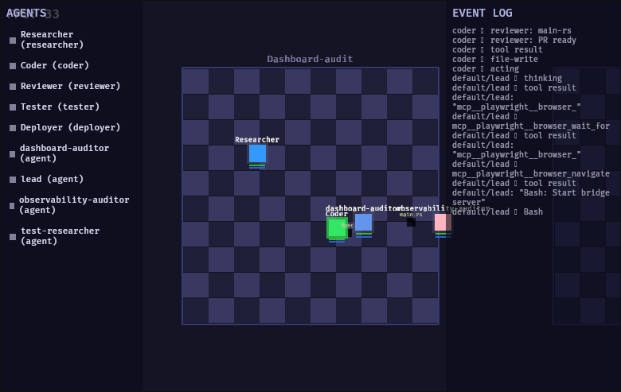
Event Translation
| Source Event | WorldEvent |
|---|---|
agent_spawn | AgentSpawn + RoomEnter |
agent_stop | AgentStatusChange(Paused) + AgentDespawn |
tool_use (PreToolUse) | AgentUseTool (+ auto-creates agent if unseen) |
| PostToolUse | AgentToolResult(success/fail) |
message | MessageSend |
Room & Team Layout
The bridge auto-generates the spatial layout:
- Each team gets a horizontal band (2500px X spacing between teams)
- Rooms within a team: 3×N grid with 700px spacing
- Portals auto-created between rooms in the same team
- 5 color families cycle per team: blue, green, coral, gold, purple
Role Normalization
The bridge maps Claude Code's subagent_type to game roles via normalizeRole(): "Explore" → researcher, "general-purpose" → coder, "Plan" → planner, etc.
Command Line
bun run bridge/server.ts \
[--db PATH] # Default: ~/ops/state/events.db
[--port PORT] # Default: 9090
[--replay] # Replay last hour of events on startup
[--team FILTER] # Watch only one team name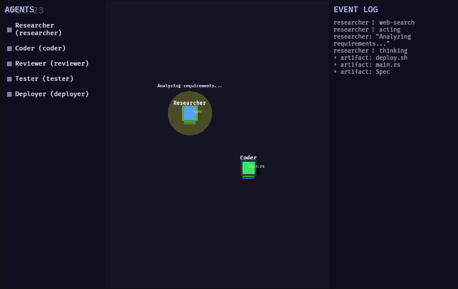
Frontend (React Shell)
The HUD overlay uses Preact 10.25 with @preact/signals 2.8 for reactive state. It builds to ~28KB and is loaded into a <div> overlaying the Bevy WebGL canvas.
State Management (store.ts)
// Reactive signals
export const agents = signal<Map<string, AgentState>>(new Map());
export const artifacts = signal<Map<string, ArtifactState>>(new Map());
export const eventLog = signal<EventEntry[]>([]); // 200-entry buffer
export const selectedAgent = signal<string | null>(null);
export const connectionState = signal<ConnState>("disconnected");
// Computed: agents grouped by team
export const agentsByTeam = computed(() => { ... });Bevy ↔ React Bridge (ws.ts)
Communication between layers uses window-level callbacks:
// Bevy → React (per event)
window.__agentworld_event(json)
// Bevy → React (periodic sync)
window.__agentworld_sync(json) // agents, artifacts, connection state
// React → Bevy (user interaction)
window.dispatchEvent(new CustomEvent("agentworld:select", { detail: agent_id }))Components
| Component | File | Function |
|---|---|---|
| Roster | Roster.tsx | Agent list with team headers, status dots, click-to-inspect |
| EventLog | EventLog.tsx | 200-entry scrolling log, color-coded, auto-scroll |
| Inspector | Inspector.tsx | Full agent details, health/energy bars, inventory grid |
| StatusBar | StatusBar.tsx | Connection dot + agent count |
Build System
Toolchain
# rust-toolchain.toml — pinned to avoid winit breakage
[toolchain]
channel = "1.89"
targets = ["wasm32-unknown-unknown"]Trunk (WASM Build)
Trunk handles the WASM compilation pipeline. The Trunk.toml pre-build hook runs bun build on the frontend before compiling the Rust code to WASM:
# Trunk.toml
[[hooks]]
stage = "pre_build"
command = "bun"
command_arguments = ["build", "frontend/src/main.tsx", "--outdir", "frontend/dist", "--minify"]Build Commands
# Development (hot-reload)
trunk serve --address 0.0.0.0 --port 8080
# Production
trunk build --release
# Frontend only
cd frontend && bun install && bun build src/main.tsx --outdir dist --minify
# Tests (core crate only — game crate is browser-tested)
cargo test -p agent-world-coreService Management
AgentWorld is process-based, not a systemd service. Three shell scripts manage the lifecycle:
start.sh
./bin/start.sh # Demo mode: trunk only
./bin/start.sh --live # Live mode: trunk + bridge with --replaySaves PIDs to /tmp/agentworld.pids for the stop script. In live mode, the bridge starts first with --replay to load the last hour of events.
stop.sh
./bin/stop.shReads PIDs from the file, kills trunk and bridge, also catches stray Playwright Chrome instances (ms-playwright/mcp-chrome).
status.sh
./bin/status.sh
# Output:
# Trunk: RUNNING (PID 1234, 5.2% CPU)
# Bridge: RUNNING (PID 5678, 0.1% CPU)
# Playwright: STOPPED (good)Event Pipeline
The end-to-end event flow from real agent work to visual rendering:
WorldEvent Reference
All 19 event types with their JSON structure. Events are the single source of truth — world state is always a projection of the event stream.
Agent Lifecycle
AgentSpawn
{
"AgentSpawn": {
"id": "team-alpha/researcher",
"name": "Researcher",
"role": "researcher",
"provider": "Claude",
"status": "Idle",
"position": { "x": 100, "y": 200 },
"room_id": "workspace",
"sprite": { "color": [100, 149, 237, 255], "shape": "Square", "scale": 1.0 },
"equipped_tools": [],
"inventory": [],
"current_task": null,
"health": 100, "energy": 100,
"thought": null,
"metadata": {}
}
}AgentDespawn
{ "AgentDespawn": { "agent_id": "team-alpha/researcher" } }AgentMove
{ "AgentMove": { "agent_id": "team-alpha/coder", "to": { "x": 350, "y": 180 } } }AgentStatusChange
{ "AgentStatusChange": { "agent_id": "team-alpha/coder", "status": "Thinking", "reason": "Analyzing spec" } }AgentThink
{ "AgentThink": { "agent_id": "team-alpha/coder", "thought": "implementing feature..." } }AgentEquipTool
{ "AgentEquipTool": { "agent_id": "team-alpha/coder", "tool_id": "bash" } }Tool Use
AgentUseTool
{ "AgentUseTool": { "agent_id": "team-alpha/coder", "tool_id": "bash", "target": "cargo test" } }AgentToolResult
{ "AgentToolResult": { "agent_id": "team-alpha/coder", "tool_id": "bash", "success": true } }Artifacts
ArtifactCreate
{
"ArtifactCreate": {
"id": "spec-doc", "name": "API Spec", "kind": "Document",
"content_ref": "spec.md", "owner": "team-alpha/researcher",
"quality": 0.5, "position": { "x": 100, "y": 200 },
"room_id": "workspace",
"sprite": { "color": [100, 149, 237, 255], "shape": "Square", "scale": 0.5 }
}
}AgentPickUp / AgentDrop / AgentTransfer
{ "AgentPickUp": { "agent_id": "team-alpha/coder", "artifact_id": "spec-doc" } }
{ "AgentDrop": { "agent_id": "team-alpha/coder", "artifact_id": "spec-doc", "position": { "x": 300, "y": 200 } } }
{ "AgentTransfer": { "from_id": "team-alpha/researcher", "to_id": "team-alpha/coder", "artifact_id": "spec-doc" } }ArtifactQualityChange
{ "ArtifactQualityChange": { "artifact_id": "spec-doc", "quality": 0.85 } }Messages
MessageSend
{
"MessageSend": {
"id": "msg-1", "from": "team-alpha/researcher",
"to": ["team-alpha/coder"],
"channel": "Direct",
"content": "Here's the spec for the new API",
"content_preview": "Here's the spec...",
"timestamp": 1709312400.0,
"visual_style": "Projectile"
}
}Rooms
RoomCreate / RoomEnter / RoomExit
{ "RoomCreate": { "id": "workspace", "name": "Workspace", "width": 600, "height": 400, "purpose": "workspace", "portals": [...] } }
{ "RoomEnter": { "agent_id": "team-alpha/coder", "room_id": "review" } }
{ "RoomExit": { "agent_id": "team-alpha/coder", "room_id": "workspace" } }Human & Error
HumanCommand / AgentError
{ "HumanCommand": { "target_id": "team-alpha/coder", "command": "pause" } }
{ "AgentError": { "agent_id": "team-alpha/coder", "error": "Tool timeout after 30s" } }Configuration
URL Parameters
| Parameter | Description | Default |
|---|---|---|
?ws=URL | WebSocket URL for live mode bridge | None (demo mode) |
If no ws parameter is provided, AgentWorld runs in demo mode with the built-in 16-step scenario.
Bridge Server Flags
| Flag | Description | Default |
|---|---|---|
--db PATH | Path to SQLite events database | ~/ops/state/events.db |
--port PORT | WebSocket server port | 9090 |
--replay | Replay last hour of events on client connect | Off |
--team NAME | Filter to only one team | All teams |
Environment
| Requirement | Version | Notes |
|---|---|---|
| Rust | 1.89 (pinned) | ≥1.90 breaks winit |
| wasm32-unknown-unknown | — | Rustup target |
| trunk | latest | WASM build tool |
| Bun | ≥1.0 | Bridge server + frontend build |
Development History
AgentWorld V1 was built across 8 development sessions. Here's a visual timeline of the evolution:
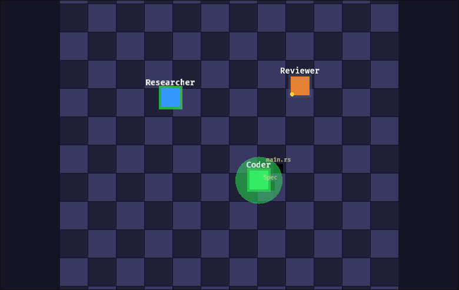
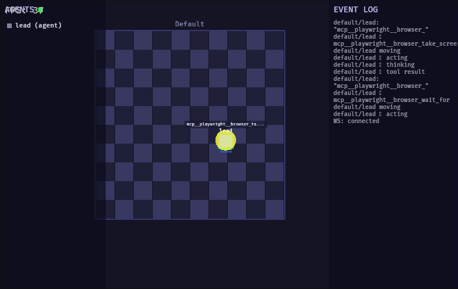
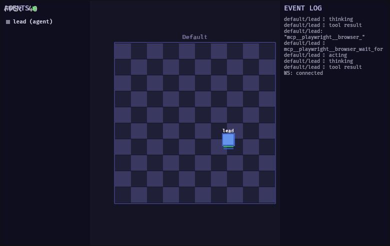
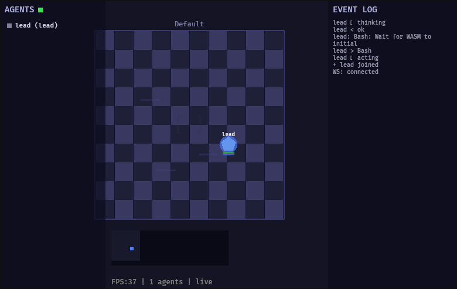
Session Timeline
| Session | Milestone |
|---|---|
| 1-2 | Core crate, Bevy setup, room grids, basic agent rendering |
| 3 | Portals, movement system, camera controls |
| 4 | Thought bubbles, message arcs, tool effects, minimap |
| 5 | Bridge server, live mode, WebSocket adapter |
| 6 | Pixel art sprites (7 roles), status animations |
| 7 | Sound system (8 procedural types), React HUD shell |
| 8 | Multi-team support, portal particles, final polish |
| 9 | Inventory system, service scripts, README |
Tech Stats
| Metric | Value |
|---|---|
| Rust code | ~5,000 lines |
| TypeScript code | ~500 lines |
| Shell scripts | ~100 lines |
| Bevy plugins | 10 |
| WorldEvent types | 19 |
| Agent roles | 7 |
| Sound types | 8 |
| Frontend bundle | 28KB |
| WASM output | ~300KB (~100KB gzipped) |
Provider-agnostic, event-sourced visualization for multi-agent systems